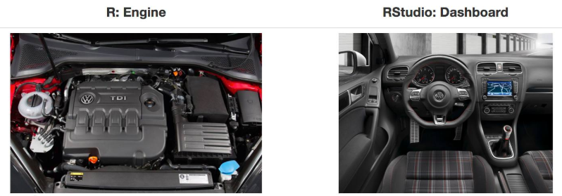
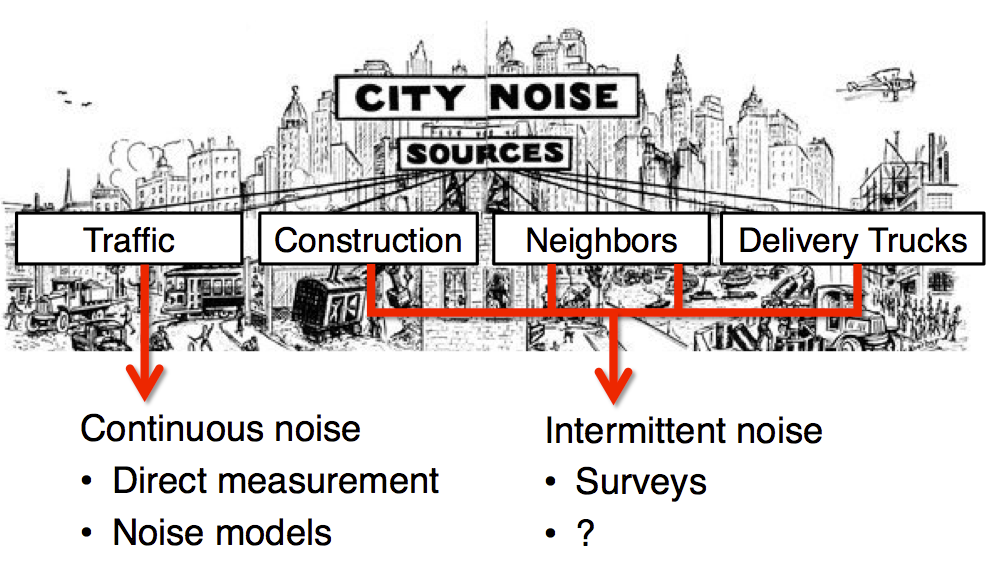
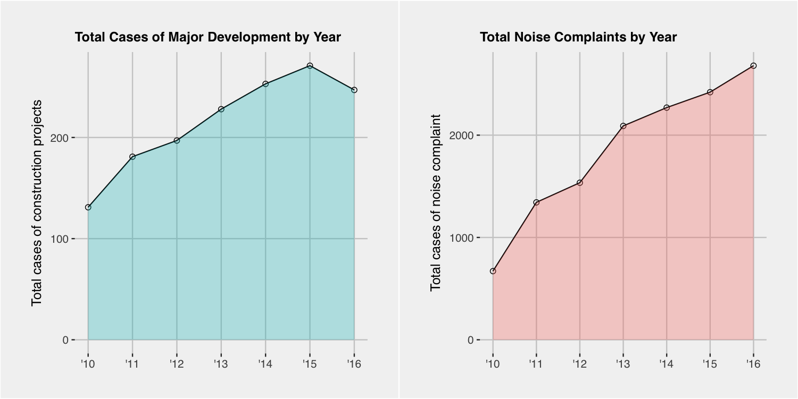
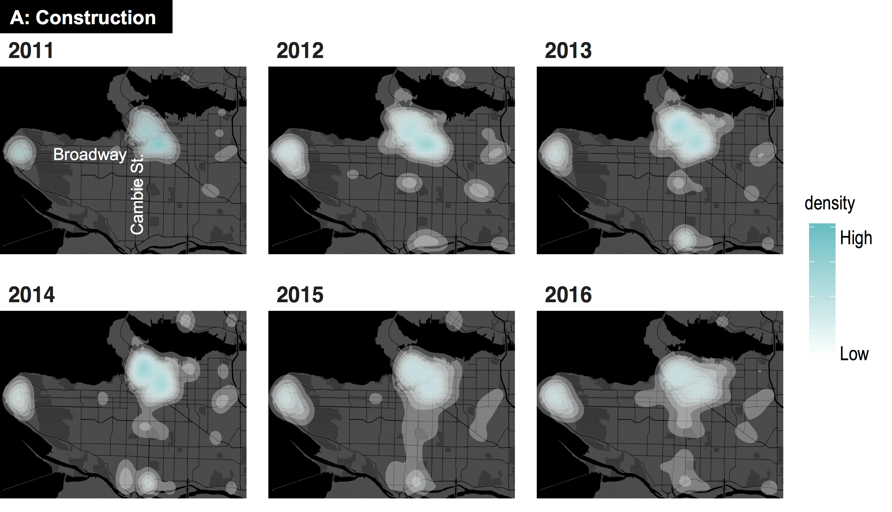
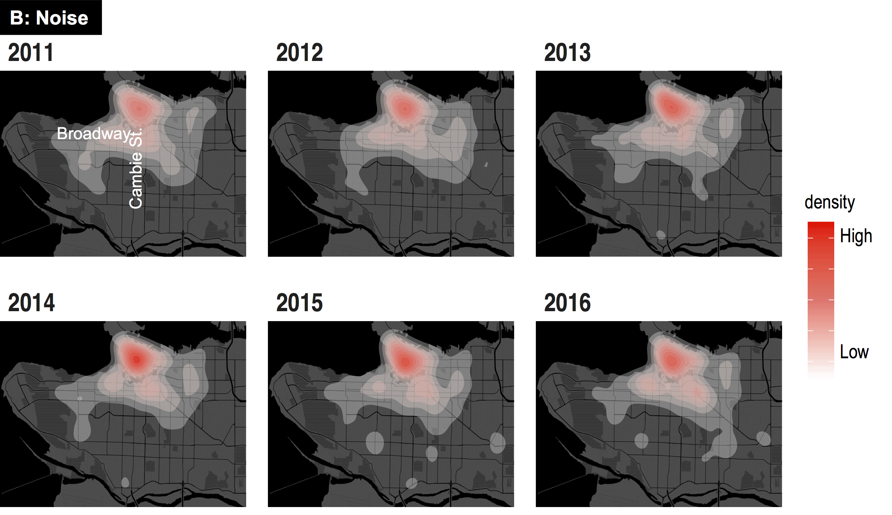

Urban Big Data Analytics
Lecture 2
Open Data Platform
July 19, 2018
Instructor: Andy Hong, PhD
Postdoctoral Research and Teaching Fellow
School of Population and Public Health
University of British Columbia
What are R and RStudio?
- Why two? not one?
- Open source software
- R is like an engine
- R Studio is like a dashboard

What is Exploratory?
- Graphical User Interface (GUI) for R
- Entirely based on tidyr language (more later)
- Make data wrangling a breeze
- User friendly and quick to learn
Open data platform
- Open data movement
- Smart cities, smart government
- More than 200 US cities/counties have open data
- Big cities leading the open data movement
NYC open data
- More than 1,500 datasets
- A broad range of topics: e.g. budget, crime
- So much data generated every minutes
- Big cities = big data = big tasks
- From big data to smart cities
Sources of urban noise

Vancouver 311 call center
- Garbage disposal
- Road maintanenance
- Graffiti removal
- Noise complaints
- ...
Construction and noise

Heatmap of construction

Heatmap of noise complaints
